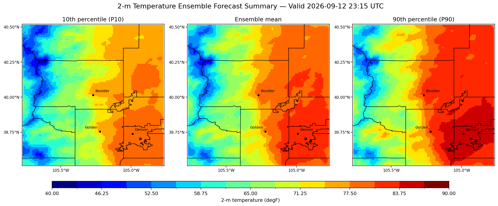
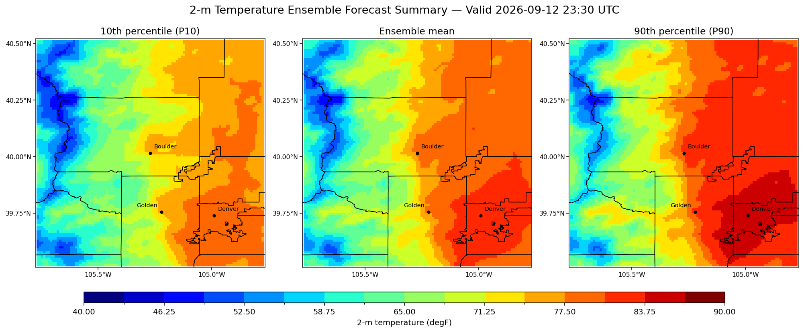
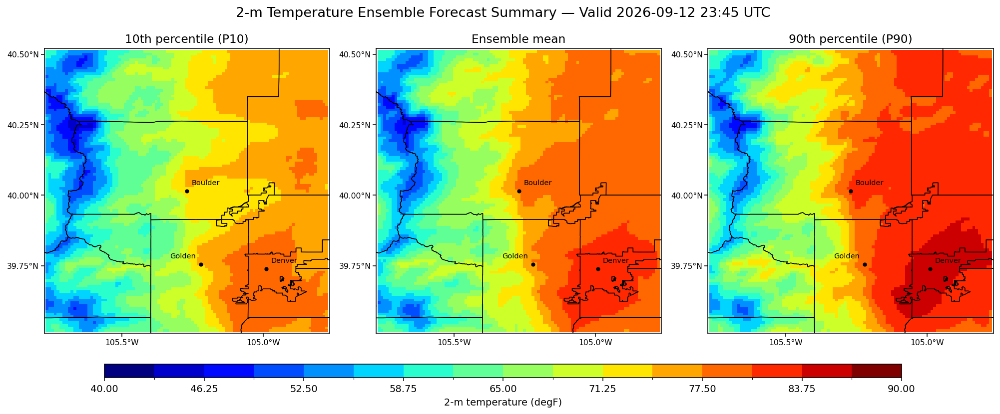
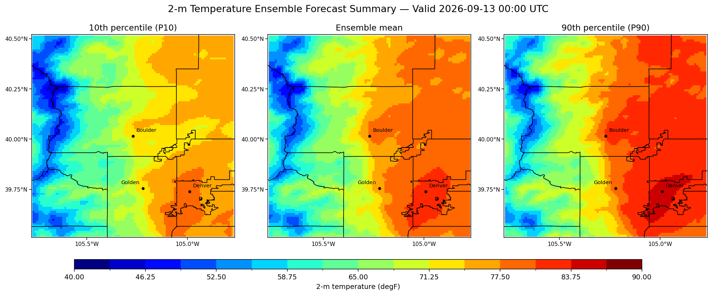
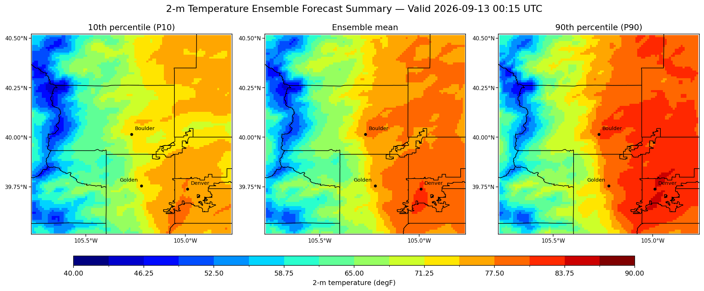
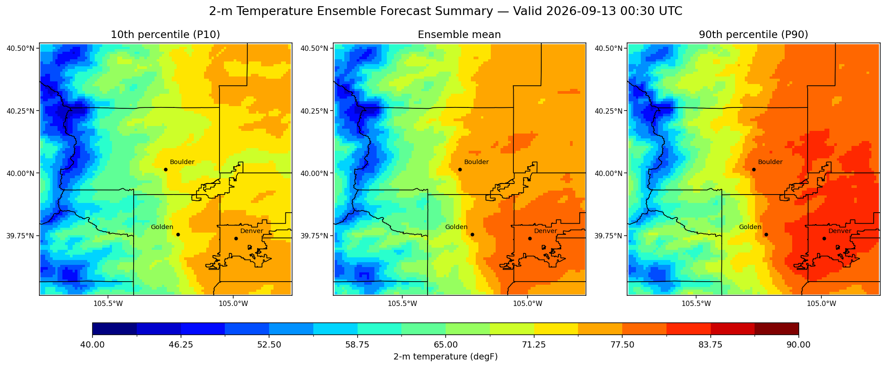
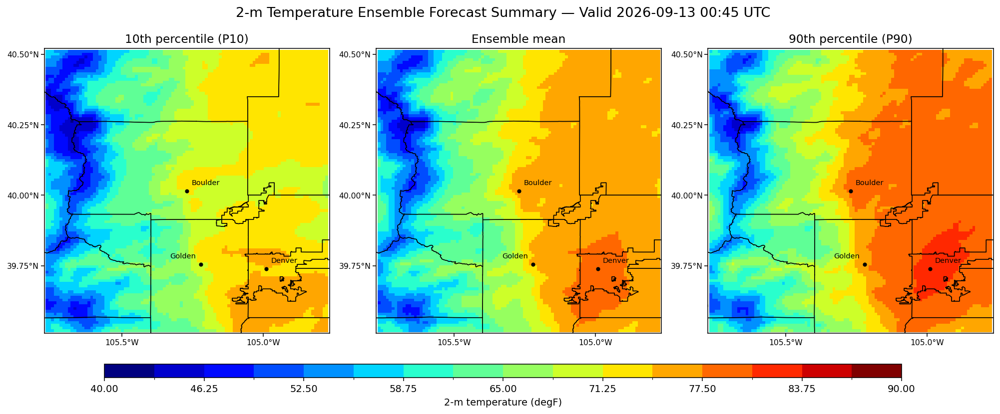
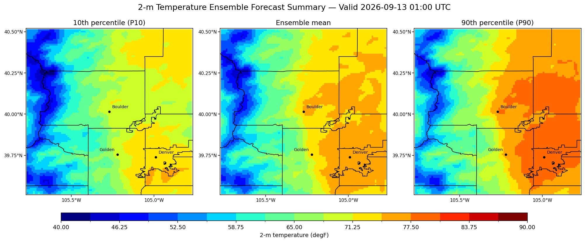

Initial Demonstration: High-Resolution Weather Uncertainty Estimation
2026.09.27
Weather forecasts are inherently uncertain, and understanding that uncertainty can be especially important for extreme weather, hazards, and weather-sensitive decision making. As an initial demonstration, WEU Lab is developing an ensemble weather estimation system that uses operational high-resolution forecast data from the U.S. National Oceanic and Atmospheric Administration (NOAA) to characterize weather uncertainty at local scales.
Our first demonstration focuses on 2-meter temperature uncertainty across the Denver–Boulder area of Colorado. Rather than providing only a single forecast, the system summarizes the ensemble using the 10th percentile (P10), ensemble mean, and 90th percentile (P90) at approximately 1-km spatial resolution. The P10–P90 range provides an intuitive view of the range of temperature outcomes represented by the ensemble. Because the system is built upon operational forecast data, these uncertainty estimates can be generated in near real time, with forecast uncertainty available at 15-minute intervals for the next three hours and potentially longer. The same framework can also be applied retrospectively to investigate historical weather events and their associated uncertainty.
Although the current demonstration uses a 1-km grid over the Denver–Boulder region, the framework is designed to be flexible. The spatial grid can potentially be refined to hundreds of meters, including approximately 100 m, and the approach can be applied to other locations across the United States.
Example: 15-minute evolution of temperature uncertainty
The sequence below illustrates how the estimated temperature distribution evolves at 15-minute intervals. Each time step shows the 10th percentile (P10), ensemble mean, and 90th percentile (P90), providing a high-resolution view of both the expected temperature pattern and the range represented by the ensemble.








What's next?
We plan to expand the demonstration beyond temperature to additional weather variables and hazards, including precipitation and fog, with longer-term exploration of applications related to tornadoes and flooding. We also plan to explore data assimilation, including Ensemble Kalman Filter (EnKF) approaches, to incorporate local observations and update high-resolution weather uncertainty estimates at much higher frequencies, potentially every five minutes or even more frequently as new observations become available.
Potential observations include surface weather stations, radar and satellite observations, and measurements collected by moving vehicles. By combining high-resolution ensemble forecasts with frequently updated local observations, the system could continually refresh its representation of local weather conditions and their uncertainty. This initial temperature demonstration is a first step toward WEU Lab's broader goal: providing high-resolution, frequently updated weather uncertainty information for extreme weather, hazards, and decision making.